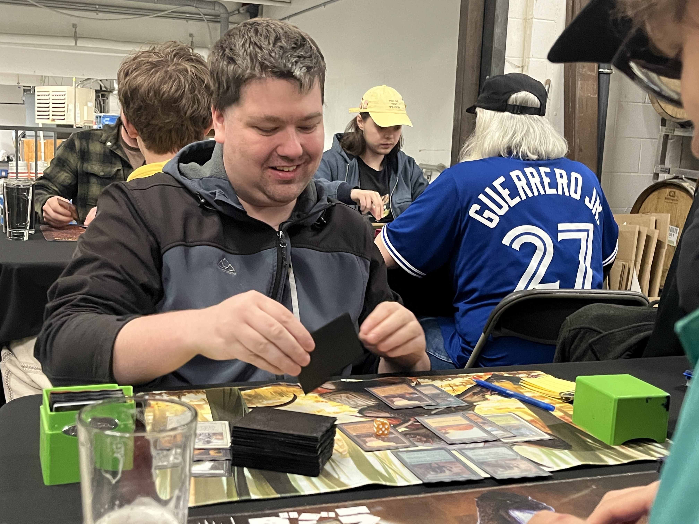
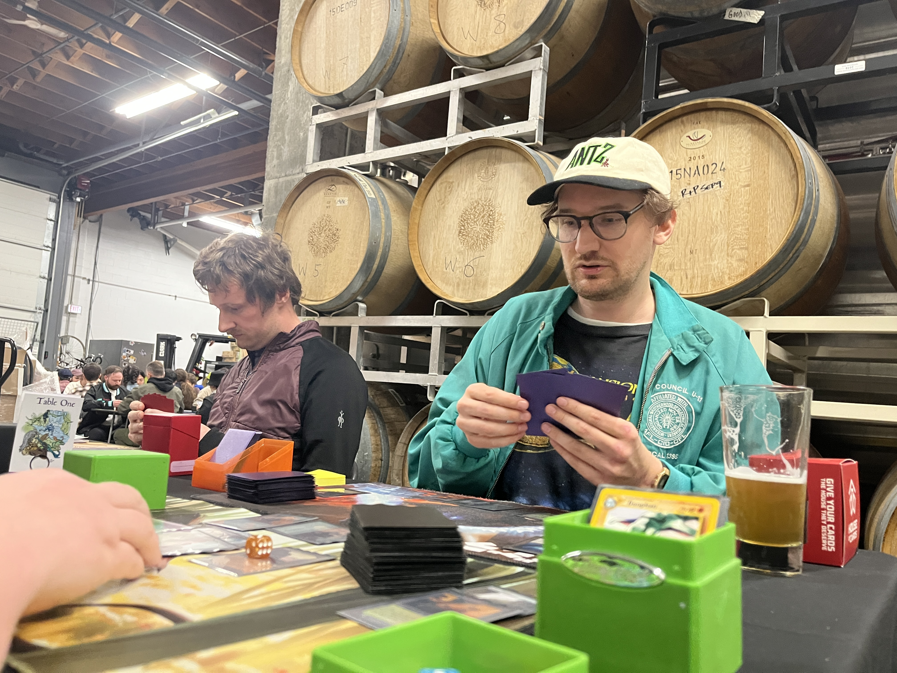
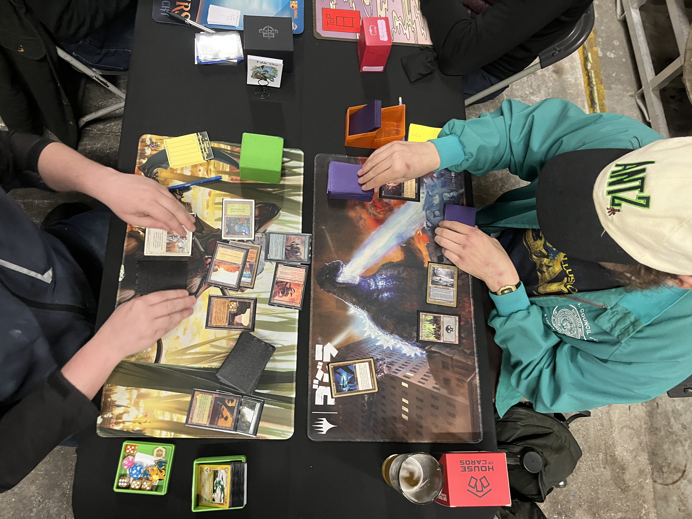
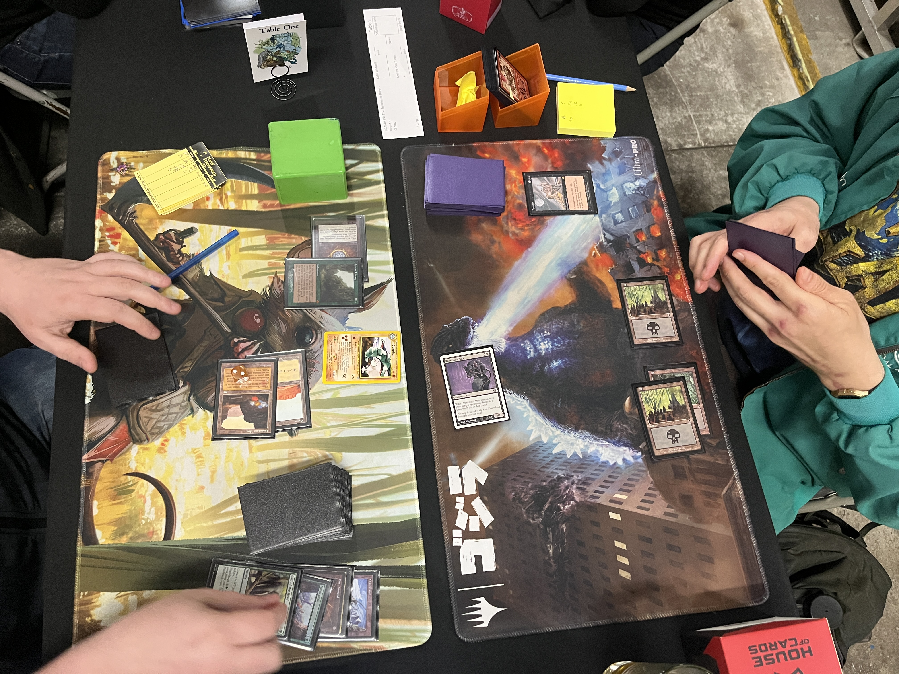
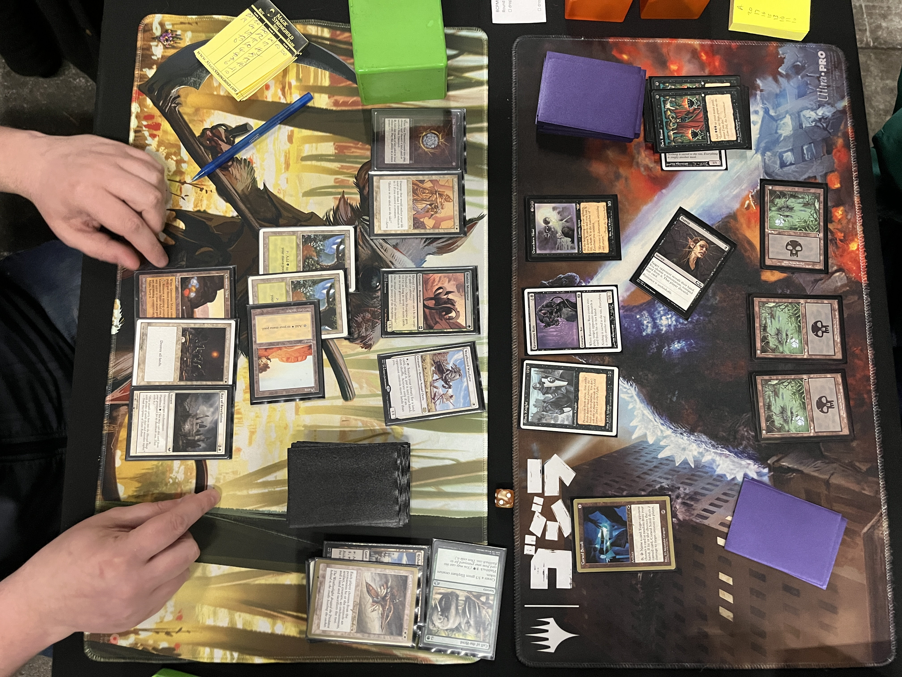
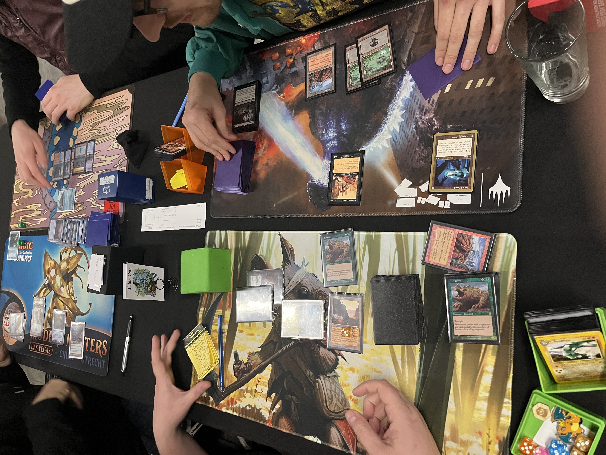

Round 4. Table 1.


Round 4 saw Colin Whitwell and Andrew Van Tunen, both 3–0, square off for a Top 8 spot.
Whitwell was on G/W TerraGeddon; Van Tunen was on Moneyball Black, a metagame player that started winning about 3 months ago and has been punching above its weight ever since.
Game 1 —
Whitwell leads on Heath. Van Tunen opens with Duress, seeing: Sylvan Library, Swords, Terravore, and 3 more land — sniping the "Green Necro" in the nick of time.
Whitwell plays a Port, and Ports Van Tunen on upkeep, who then plays a Spawning Pool.
Whitwell drops a land and Nimble Mongoose, and keeps the Port going.
Van Tunen, unfortunately, remained stuck on 2 land. Although he managed a Cursed Scroll and another Duress, it wasn't long before Whitwell stuck the Terravore. A follow-up Wasteland was the nail in the coffin.

1–0 Whitwell
+2 Ray of Revelation · +1 Worship · +1 Naturalize
Game 2 —
Van Tunen plays Swamp, and passes.
Whitwell plays land, Mox Diamond, Sylvan Library.
Van Tunen plays a Ravenous Rat, eating a second Mox.
Whitwell plays a land.

Van Tunen attacks for 1, then plays a Dystopia to eat the Library before it can gain any more advantage. But Whitwell has Naturalize. He untaps and casts a Call of the Herd, making an Elephant token — a relative nightmare for Van Tunen's attrition strategy.
But Van Tunen volleys back with a second Dystopia. Whitwell gives up the Library during his upkeep, before getting any last looks at the top of his library. He Flashes back the Call into the active Dystopia, signalling a willingness to race it.
Van Tunen pays 1, and then plays a third Dystopia!
Whitwell scoops both Elephants on his turn and then shrugs and casts Armageddon.
Van Tunen gives up one of the Dystopias, and keeps the other around. He plays a Factory.
The Rat continues to chip, bringing Whitwell down to just 10 life.
Whitwell Wastelands the Factory, ships it back.
9 from the Rat now.
Whitwell plays Port. Taps down a land during upkeep. Van Tunen maintains the Dystopia.
8 from the Rat.
Whitwell plays land. Ports on Upkeep.
Van Tunen gives up the Dystopia. Cracks with Rat — down to 7.
Whitwell plays a fetch land. Down to 6. And finally Swords the Rat.
Van Tunen's still on just one Swamp against Whitwell's four land. But finally — a Wasteland for the belligerent Port.
Whitwell drops a Nimble Mongoose. "I think I have threshold," he jokes, indicating the stacked graveyard.
Van Tunen Rituals a Black Knight. Because of the life disparity — with Van Tunen still in his teens — Whitwell can't profitably attack.
Another Rat eats a Cataclysm. Ritual, Graveborn Muse.
Then, Whitwell draws a game-changer:
Worship — a sideboard silver bullet meant, in tandem with Mongoose, to keep decks like Van Tunen's honest.

But Van Tunen remains stoic. Rituals out a Graveborn Muse. A few turns later, a Cursed Scroll revealing Bane of the Living, and a peeled Perish off the top — Van Tunen had been keeping honest indeed.
+3 Fire // Ice · +1 Swords to Plowshares
Game 3 —
Whitwell, on the play, keeps. Van Tunen mulligans… and again… down to 5. But it wouldn't be the first time his back had been against the wall in the match.
Whitwell "Ritual Necros": Land, Mox, Sylvan.
Van Tunen fires back — literal Dark Ritual, Dystopia. Munch your Sylvan in your Upkeep, before you can get any value in your Draw step!
Whitwell passes it back, committed to waiting out the Dystopia.
Van Tunen sustains it for 1 life, and then plays a Withered Wretch — one of the format's rising stars.
Whitwell Plows it. Misses his 3rd land drop. Passes it back.
Van Tunen pays 2. Plays Factory. Passes.
Whitwell misses again. Passes.
3 life now. Animates Factory and attacks — Naturalized. Plays a Hypnotic Specter.
Whitwell plays a Port. Passes. Van Tunen gives up the Dystopia. Hypnotic Specter grabs a Ray of Revelation.
Whitwell sticks a Nimble Mongoose, still just below Threshold. Under threat of losing it to Hyppie anyway, Whitwell casts a Defensive Geddon, sending both players back to the Stone Age. Although this destroys two of his own Ports, it fills the graveyard with lands.
Specter cracks Whitwell down to 16. Goose cracks Van Tunen down to 10.
Specter cracks… Plowed.
Van Tunen Ritual-Perishes to clear the Mongoose.
Parity — the calm before the storm.
Whitwell's on a few land and a Mox. Van Tunen on two land, Cursed Scroll, 3 cards in hand.
Then Whitwell draws a game-breaker: Terravore. 11/11.
"Smother."
Van Tunen peels Withered Wretch #2.
Whitwell rips a second Terravore!

Wretch munches one land, bringing it down to a 10/10. Untaps and plays land 4.
Whitwell cracks, and after 4 more Wretchings, the 6/6 brings Van Tunen down to 3.
Whitwell slams a third Terravore off the top!! But would it be enough to get across the finish line?
Van Tunen draws his fifth land.
Whitwell draws a Naturalize for the Scroll, then cracks with both Terravores. Van Tunen removes 5 more cards, blocking one harmlessly and taking the other down to 2 life.
Van Tunen untaps, removes the last land to pick off the final Terravore, attacks Whitwell down to 12, and after being down a game in the second, double-mulliganing in the third — the win, the signature on the slip, was finally just a few faded draw steps away…
Whitwell untaps, knocks his deck, and peels Fire off the top. Tables it.
"You."
"I had three," he shrugs.